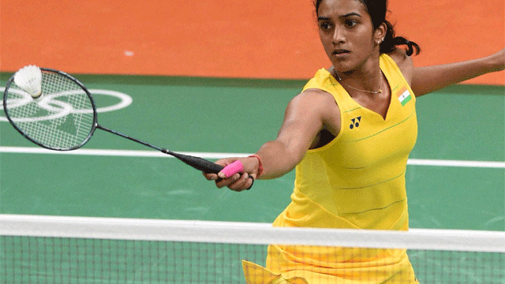

Home badminton table tennis cricket tennis shooting and wrestling

Why I like Badminton
- Badminton is a wonderful sport.
- It can be played both as a single player and double player.The rules vary but not much.
- the rules are easy to learn.
- It requires a lot of fitness and stamina.
Why is Badminton easy to begin playing
- It is not very expensive because it can also be played in the open as the main necessities are a racket and shuttle.
- The lightness of the shuttlecock and racquet compared to other sports make it easy for beginners
- It is highly comfortable for kids.
- the shots are not so complicated.

Player-P V Sindhu
- has won medals at numerous tournaments becoming india
- she doesnot care about winning or losing she only gives her hundred percent
- There were many obstacles in the pursuit of her dreams. She had long hours of training, balancing studies and badminton.
- Honoured with Padma Shri Award, the fourth highest civilian award in India, in March 2015
- Received Rajiv Gandhi Khel Ratna Award, the highest sporting honour of India, on 29 August 2016
- Bestowed with Arjuna Award for badminton on 24 September 2013